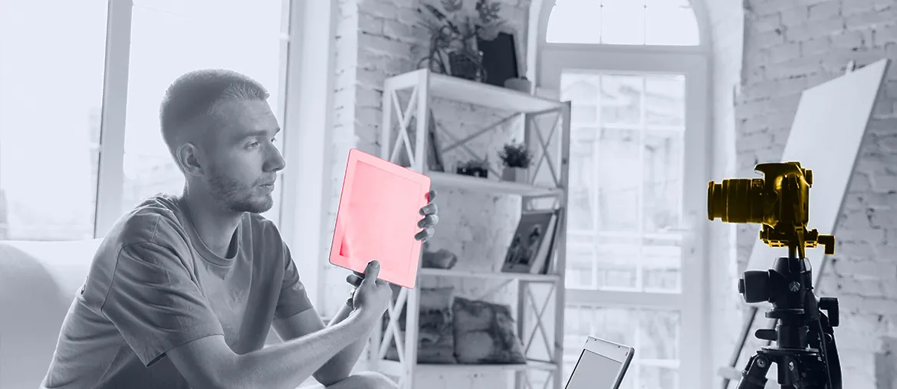

Trace strings, screenshots, vendor questions, LQA bugs, and approvals from source text to final build, then rank the slowest handoffs.
Proposal brief for Anna Orr
Keep localization clear while new game work speeds up.
A short Elinext squad can help Avalanche keep strings, context, LQA, and release handoffs in one flow while theHunter live updates continue and a new project team ramps.
Why we are here: Avalanche is hiring a Senior Producer for a new project. That usually means more teams, more dependencies, and more late content pressure on localization.
What we saw
Live updates plus new-project setup
theHunter keeps shipping live content while public roles call for more workflow, QA, and player-feedback discipline.
Where it lands
Localization gets the missing context
When handoffs stay manual, Anna's team keeps chasing missing notes, late text changes, and repeat LQA loops.
Our read
The signal says Avalanche is not just filling a seat. It is adding new delivery load while shared technology and live-service work keep moving. In that setup, localization gets hit by rushed context, late string changes, and too many questions between production, translators, LQA, and QA. If those handoffs stay manual, release notes slip, localization bugs land late, and your team spends more time chasing clarity than shipping clean updates.
What we'd do
We would place a dedicated squad under your production lead for a six-week pilot with weekly demos and one clear task list.
Team shape
Small squad, one clear owner
Delivery lead / business analystflow owner
Full-stack engineerinternal tools
Frontend engineerstatus views
QA automation engineerrelease checks
React
Node.js
Python
QA automation
Create a simple working layer for glossary links, character limits, screenshots, ownership, and status notes translators can use fast.
Flag missing keys, broken placeholders, risky text overflow, and open loc bugs before content freezes move into downstream builds.
Give localization, QA, and production one board that shows what is blocked, what is ready, and who owns the next move.
Who is Elinext
Proof

Web Application for Seamless Subtitle Management
Elinext built a web platform that linked video creators with subtitle makers and was already serving the client's first live need.
Read the case study
Custom Randomizer Tool for Internal Testing
Elinext shipped a centralized QA tool that reduced manual effort, improved visibility, and shortened test cycles for game teams.
Read the case studyCompare notes with us
If this reads close, we can show the workflow.
Start the conversation